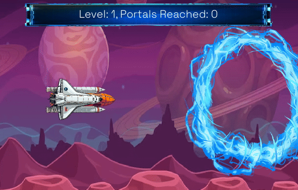
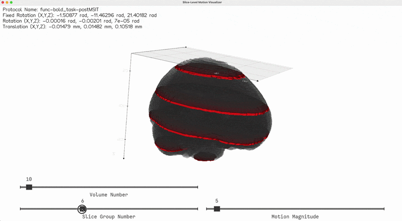
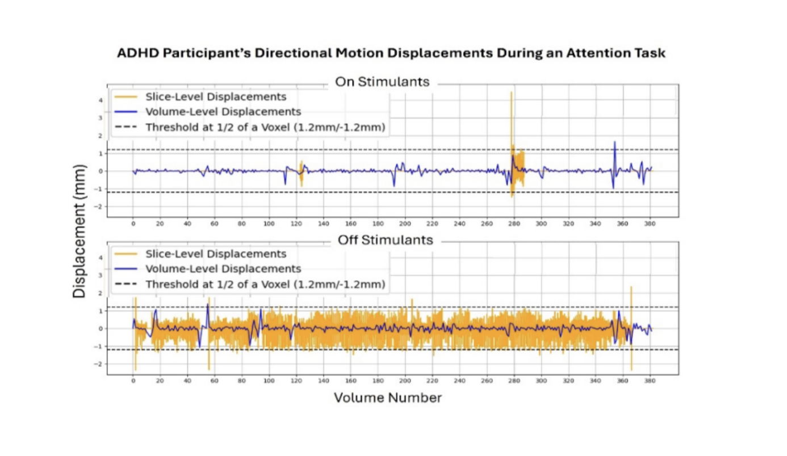
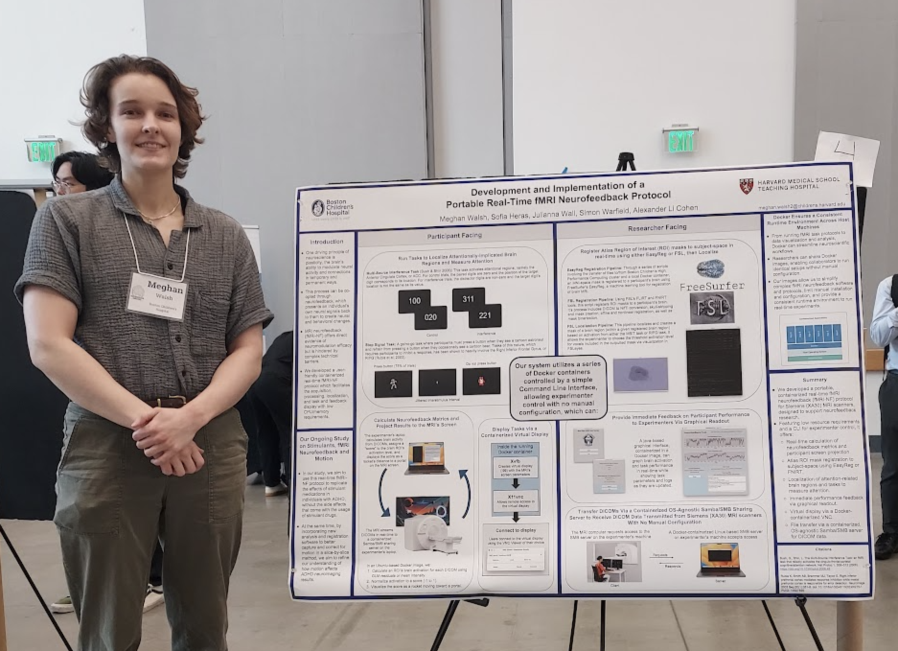
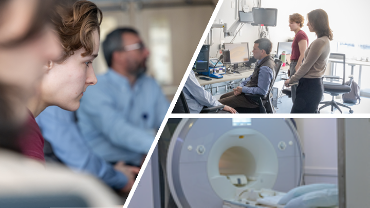
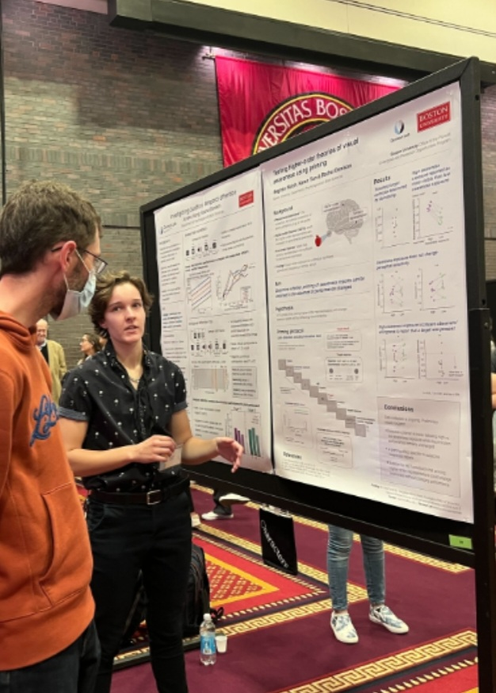

I am building neuroimaging tools, real-time fMRI pipelines, and reproducible research
software to advance our understanding of brain function and neurological disorders.
Projects I am currently developing or contributing to.

Developed a real-time fMRI neurofeedback system that computes participant brain activation during scanning and converts activation levels into interactive video game mechanics.

Developed a slice-level registration framework to detect intra-volume motion in fMRI datasets across ADHD, ASD, and typically developing cohorts.

Development and Implementation of a Portable Real-Time fMRI Neurofeedback Protocol
National Institutes of Health (NIH) | February 2026
Contributed to a multi-year R01 grant submission investigating how psychostimulant
medications modulate brain networks in ADHD using pharmacological fMRI and slice-based motion correction.
Contributions included developing and implementing the real-time fMRI neurofeedback protocol
and slice-level motion characterization pipeline that form the basis of the proposed aims, as well as
creating figures for the grant submission.

Development and Implementation of a Portable Real-Time fMRI Neurofeedback Protocol
Georgia Institute of Technology | May 2025
Received a $500 travel award to present a portable real-time fMRI neurofeedback framework at InterfaceNeuro,
an interdisciplinary neurotechnology conference focused on advancing brain-body-machine interfaces.
The system uses containerized software to automate image registration, real-time MRI data processing, and neurofeedback delivery,
enabling researchers to provide interactive brain-state feedback during scanning with minimal setup and low computational overhead.

Optimizing Real-time fMRI Neurofeedback to Improve Sustained Attention in ADHD
Boston Children's Hospital | April 2024
Received a one-year, $100,000 pilot grant funding innovative research projects exploring neurobiological
mechanisms of attention and anxiety and offering translational potential to develop new
biomarkers or therapeutic strategies for conditions like ADHD.

Dissociating subjective and objective awareness reports using priming
Boston University | May 2022
Awarded a stipend through Boston University's Undergraduate Research Opportunity Program (UROP) to
conduct faculty-mentored research during the summer term gaining hands-on experience in study design, data
analysis, and academic presentation.
Tian, K. J., Maniscalco, B., Epstein, M. L., Shen, A., Castaneda, O. G., Kurosawa, T., Motzer, J. A., Olsson, E., Russell, E. E.,
Walsh, M. E., Wang, J., Awrang Zeb, T. B., Brown, R., Lamme, V. A. F., Lau, H., He, B. J., Brascamp, J. W.,
Block, N., Chalmers, D., … Denison, R. N. (2025). When awareness outstrips performance: critical tests of subjective
inflation under inattention. bioRxiv, 2025.07.03.661972. https://doi.org/10.1101/2025.07.03.661972
(preprint)
Vision Sciences Society Annual Meeting Published Abstract | September 2024
Tian, K., Maniscalco, B., Epstein, M., Shen, A., Graham Castaneda, O., Arzu, G., Kurosawa, T., Motzer, J., Olsson, E., Romero, L., Russell, E., Walsh, M., Wang, J., Bek Awrang Zeb, T., Brown, R., Lamme, V., Lau, H., He, B., Brascamp, J., … Denison, R. (2024). Attention robustly dissociates objective performance and subjective visibility reports. Journal of Vision, 24(10), 408-408. https://doi.org/10.1167/jov.24.10.408
Vision Sciences Society Annual Meeting Published Abstract | August 2023
Tian, K., Walsh, M., & Denison, R. (2023). Dissociating subjective and objective awareness reports using priming. Journal of Vision, 23(9), 4737-4737. https://doi.org/10.1167/jov.23.9.4737